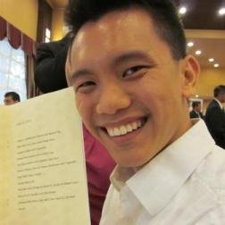

MAY PONGPITPITAK



Hey there! My name is May. I'm a 20-something tech-loving, CrossFitting, food-munching, engineer. I was born and raised in Thailand, and moved to Canada back in high school years.
I've completed the mechanical engineering program with a business minor at University of Victoria. I've recently made a career moved into the world of technology and started work with ExcelSystems. I have background experiences in solar heating, aircraft manufacturing and construction industry.
My personal interests are in technologies, food, and fitness. Outside of work, I enjoy software developing, CrossFit training, and volunteering as a coach and a personal trainer.